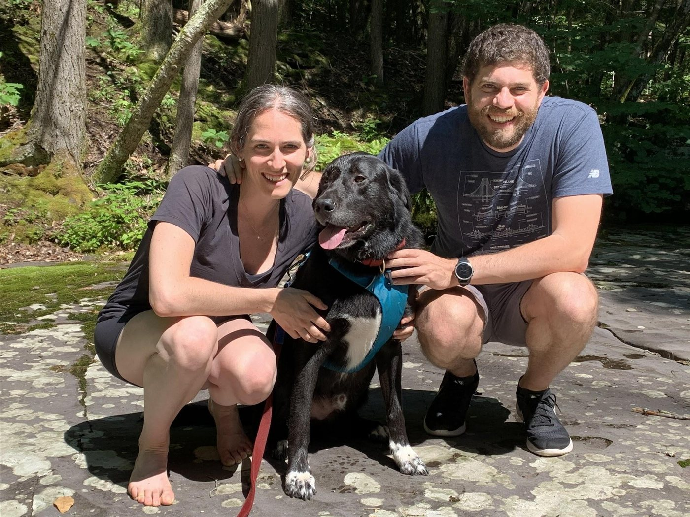

Nathaniel Lubin has spent his career exploring connections between technology and society. First in politics and since with technology companies, media, investments, and foundations, Nathaniel is credited with developing and executing innovative approaches to improving online discourse, more effectively measuring key metrics, and improving outcomes.
Nathaniel was the Director of the Office of Digital Strategy at the White House where he led a team of strategists and practitioners that sought to modernize the way the White House engaged and communicated with the American public. Before that, he served as Director of Digital Marketing at Obama for America, where he led the largest paid digital fundraising, persuasion, and outreach programs yet run in politics with a budget of more than $112 million.
Nathaniel then went on to apply this expertise across multiple sectors. He founded the Better Internet Initiative, a non-profit fellowship connecting large digital creators with public-interest causes and topics, and Incite Studio, which creates and tests digital content that achieves measurable change, including topics like COVID-19 response, civic participation, and the goals of select corporate partners. He is a founder and CEO of Survey 160, a software company — with investments from Higher Ground Labs and New Media Ventures — seeking to modernize methods of public research. Nathaniel has helped dozens of organizations ranging from Fortune 100s to startups better leverage technology and digital tools to meet their mission.
Nathaniel served as an expert witness in the landmark case State of New Mexico v. Meta Platforms, has been an Operator-in-Residence with Laconia Capital’s Venture Cooperative, an RSM Fellow at Harvard’s Berkman Klein Center, and a Visiting Fellow at Cornell University’s Digital Life Initiative. He is a member of the Council for Responsible Social Media and a member of the Knight Georgetown Institute’s Expert Working Group on Recommender Systems.

Originally from New York, Lubin is an honors graduate from Harvard University. Nathaniel also worked on President Obama’s 2008 campaign and helped launch Bully Pulpit Interactive, a leading digital marketing firm. He lives in Brooklyn with his wife Kate, daughter Emma, and their dog Charlie.